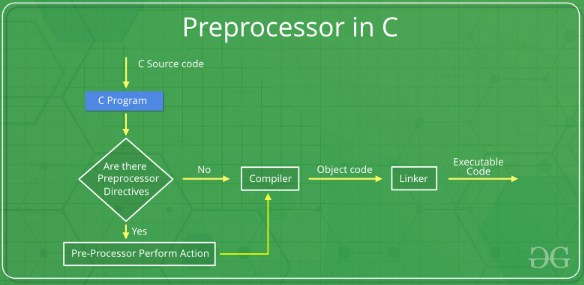
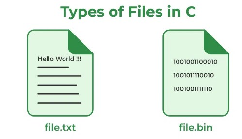

Memory Management
C Preprocessors
Preprocessors are programs that process the source code before compilation. Several steps are involved between writing a program and executing a program in C. Let us have a look at these steps before we actually start learning about Preprocessors.
You can see the intermediate steps in the above diagram. The source code written by programmers is first stored in a file, let the name be “program.c“. This file is then processed by preprocessors and an expanded source code file is generated named “program.i”. This expanded file is compiled by the compiler and an object code file is generated named “program.obj”. Finally, the linker links this object code file to the object code of the library functions to generate the executable file “program.exe”.
Preprocessor Directives in C
Preprocessor programs provide preprocessor directives that tell the compiler to preprocess the source code before compiling. All of these preprocessor directives begin with a ‘#’ (hash) symbol. The ‘#’ symbol indicates that whatever statement starts with a ‘#’ will go to the preprocessor program to get executed. We can place these preprocessor directives anywhere in our program.
Types of C Preprocessors
- Macros
- File Inclusion
- Conditional Compilation
- Other directives
Macros
In C, Macros are pieces of code in a program that is given some name. Whenever this name is encountered by the compiler, the compiler replaces the name with the actual piece of code. The ‘#define’ directive is used to define a macro.
File Inclusion
This type of preprocessor directive tells the compiler to include a file in the source code program. The #include preprocessor directive is used to include the header files in the C program.
Conditional Compilation
Conditional Compilation in C directives is a type of directive that helps to compile a specific portion of the program or to skip the compilation of some specific part of the program based on some conditions.
Other Directives
Apart from the above directives, there are two more directives that are not commonly used.
- #undef Directive
- #pragma Directive
File Handling in C
File handling in C is the process in which we create, open, read, write, and close operations on a file. C language provides different functions such as fopen(), fwrite(), fread(), fseek(), fprintf(), etc. to perform input, output, and many different C file operations in our program.
Why do we need File Handling in C?
So far the operations using the C program are done on a prompt/terminal which is not stored anywhere. The output is deleted when the program is closed. But in the software industry, most programs are written to store the information fetched from the program.
- Reusability: The data stored in the file can be accessed, updated, and deleted anywhere and anytime providing high reusability.
- Portability: Without losing any data, files can be transferred to another in the computer system. The risk of flawed coding is minimized with this feature.
- Efficient: A large amount of input may be required for some programs. File handling allows you to easily access a part of a file using few instructions which saves a lot of time and reduces the chance of errors.
- Storage Capacity: Files allow you to store a large amount of data without having to worry about storing everything simultaneously in a program.
Types of Files in C
A file can be classified into two types based on the way the file stores the data. They are as follows:
- Text Files
- Binary Files

Text Files
- Each line in a text file ends with a new line character (‘\n’).
- It can be read or written by any text editor.
- They are generally stored with .txt file extension.
- Text files can also be used to store the source code.
Binary Files
A binary file contains data in binary form (i.e. 0’s and 1’s) instead of ASCII characters. They contain data that is stored in a similar manner to how it is stored in the main memory.
- The binary files can be created only from within a program and their contents can only be read by a program.
- More secure as they are not easily readable.
- They are generally stored with .bin file extension.
C File Operations
C file operations refer to the different possible operations that we can perform on a file in C such as:
- Creating a new file – fopen() with attributes as “a” or “a+” or “w” or “w+”
- Opening an existing file – fopen()
- Reading from file – fscanf() or fgets()
- Writing to a file – fprintf() or fputs()
- Moving to a specific location in a file – fseek(), rewind()
- Closing a file – fclose()